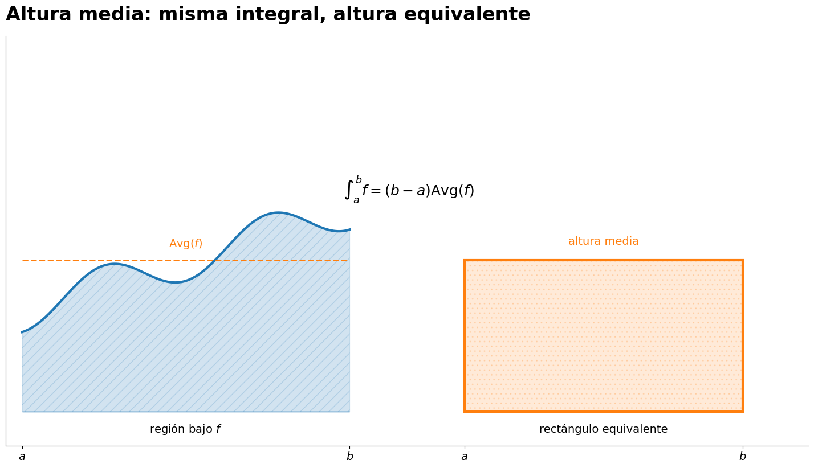
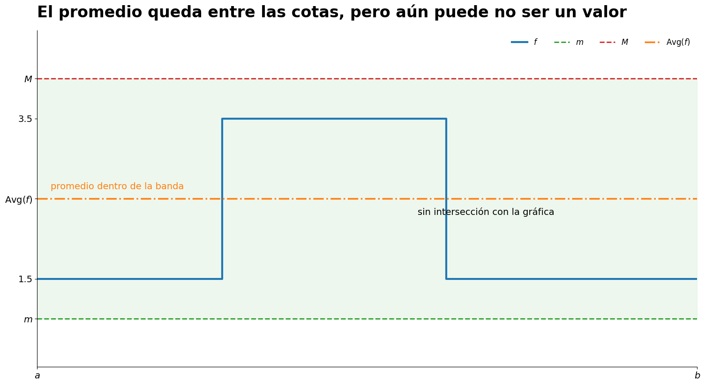
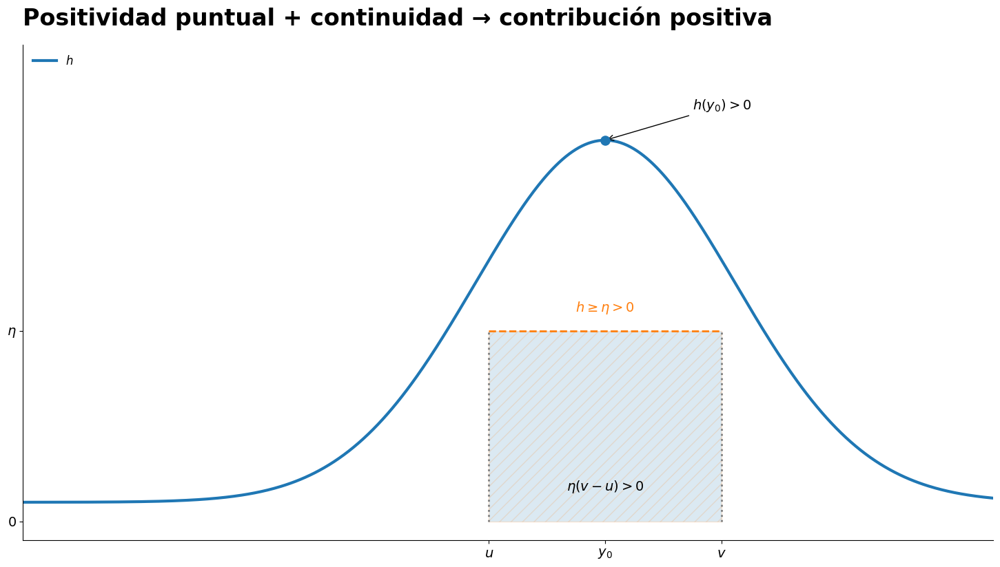
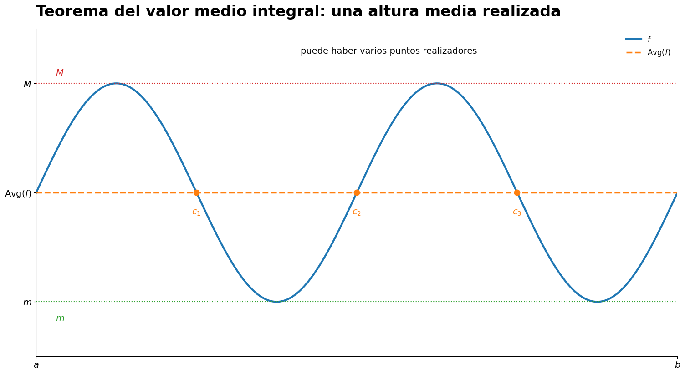
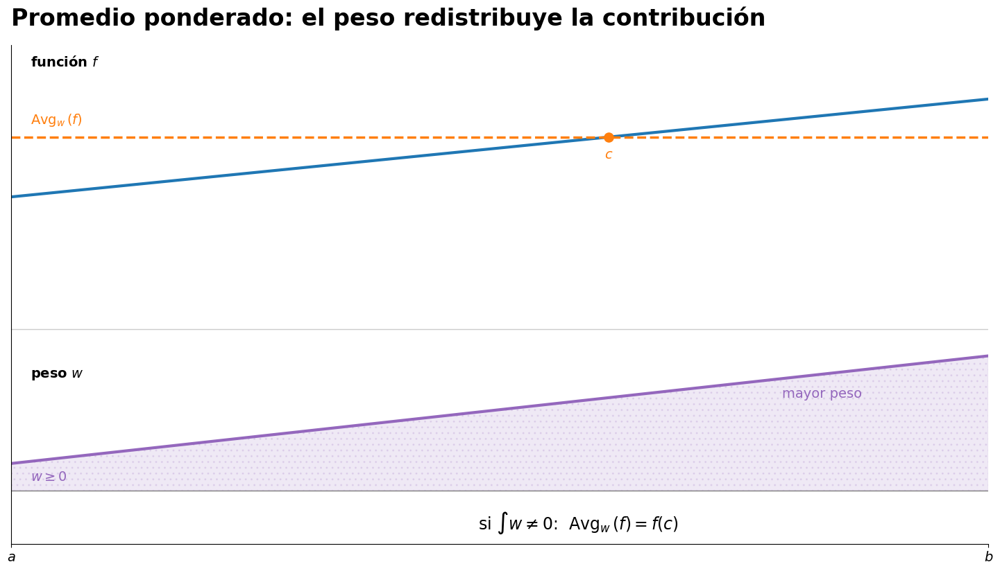
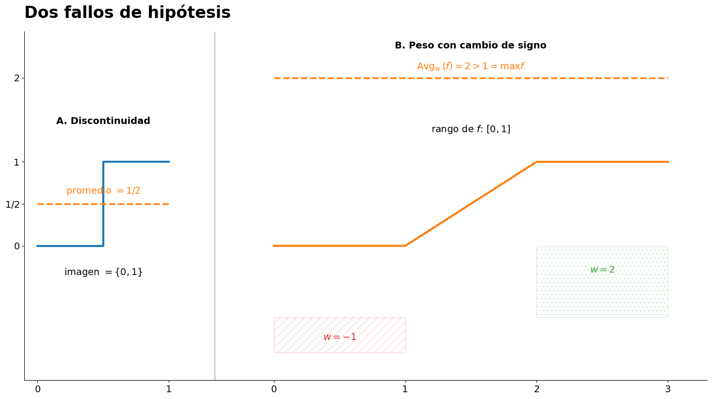
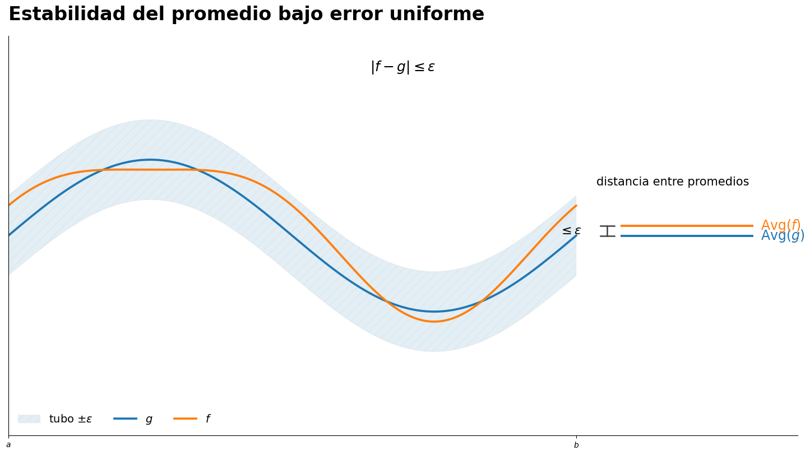
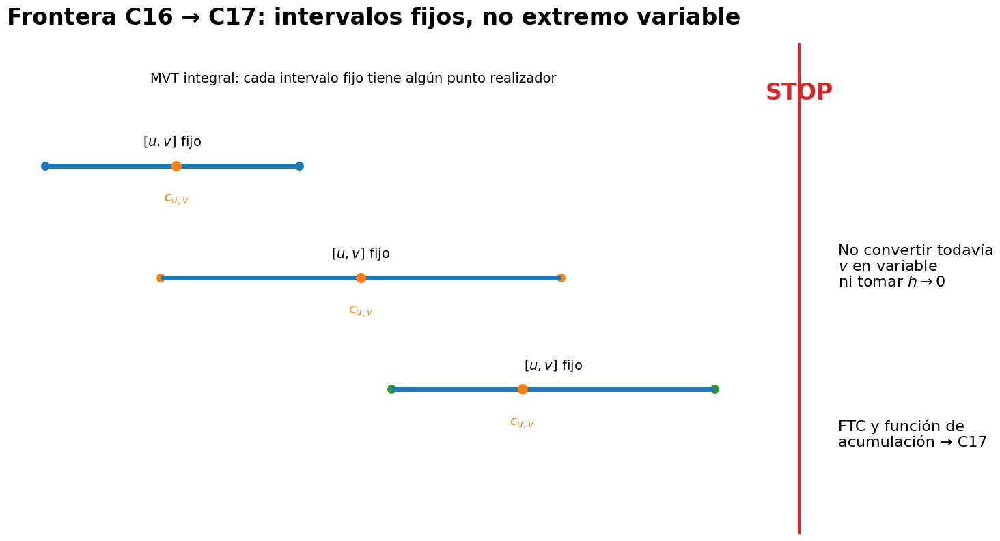
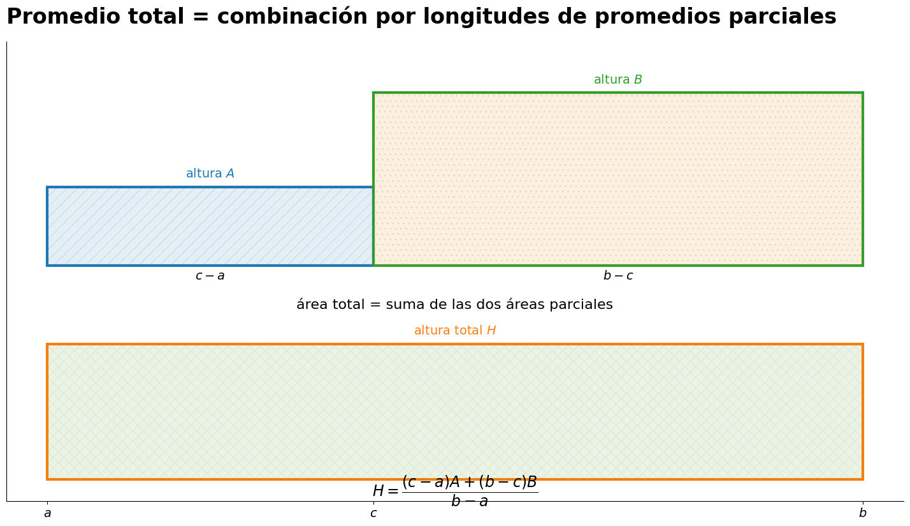
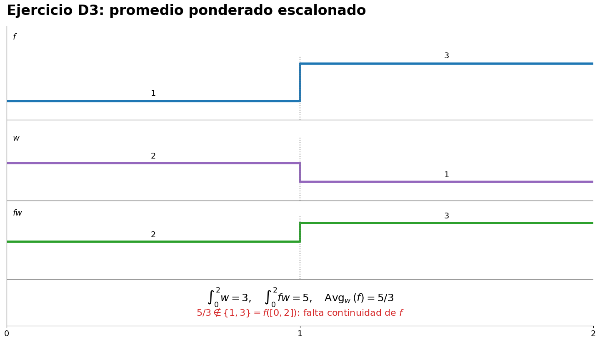

Teoremas de valor medio para integrales
15 Teoremas de valor medio para integrales
← Capítulo 14 · Índice del Tomo I · Capítulo 16 →
15.1 De una integral a una altura media
En el capítulo anterior construimos la integral de Riemann como un número asociado a una función integrable y a un intervalo. Ese número conserva información acumulativa sobre toda la función: incluso cuando conocemos
\[ \int_a^b f(x)\,dx, \]
no hemos identificado todavía una altura particular de la gráfica que pueda representar por sí sola ese valor.
Hay, sin embargo, una normalización elemental que transforma la integral en una cantidad con la misma escala vertical que los valores de \(f\). La longitud del intervalo es \(b-a\); por tanto, cuando \(a<b\), podemos repartir el valor integral uniformemente sobre esa longitud.
Definición 15.1 Definición (promedio integral). Sea \(f\in\mathcal R[a,b]\), con \(a<b\). El promedio integral de \(f\) sobre \([a,b]\) es
\[ \boxed{ \operatorname{Avg}_{[a,b]}(f) := \frac{1}{b-a}\int_a^b f(x)\,dx. } \]
La definición exige integrabilidad de Riemann, pero no continuidad. La continuidad aparecerá más adelante, cuando preguntemos si este número promedio es efectivamente uno de los valores tomados por la función.
La identidad que define el promedio puede escribirse también como
\[ \int_a^b f(x)\,dx = (b-a)\operatorname{Avg}_{[a,b]}(f). \]
Esta forma explica la expresión altura media: el factor \(b-a\) aporta la longitud horizontal y \(\operatorname{Avg}_{[a,b]}(f)\) aporta una altura. Cuando \(f\ge0\) y la integral admite la lectura geométrica usual, el rectángulo de base \([a,b]\) y altura \(\operatorname{Avg}_{[a,b]}(f)\) tiene el mismo contenido acumulado que la región representada por la integral. Para funciones que cambian de signo, la identidad algebraica sigue siendo válida, aunque la interpretación como área geométrica ordinaria ya no debe tomarse literalmente.

La lectura geométrica de Figura 15.1 interpreta el promedio como una altura numérica; todavía no afirma que exista un punto de la gráfica que la realice.
Ejemplo 15.1 Dos calibraciones básicas del promedio.
Si \(f(x)=c\) en todo \([a,b]\), en §14.2 se obtuvo
\[ \int_a^b c\,dx=c(b-a). \]
Por tanto,
\[ \operatorname{Avg}_{[a,b]}(f)=c. \]
Una función constante tiene como promedio exactamente su única altura.
Para la identidad \(f(x)=x\) en \([0,1]\), Ejemplo 14.2 demostró
\[ \int_0^1 x\,dx=\frac12. \]
Como el intervalo tiene longitud \(1\),
\[ \operatorname{Avg}_{[0,1]}(f)=\frac12. \]
En este caso el promedio coincide con el valor \(f(1/2)\), pero esa coincidencia es todavía un hecho del ejemplo, no un teorema general.
Un número no es todavía un punto
Conviene separar desde ahora dos preguntas distintas.
La primera es puramente numérica:
\[ \text{¿cuánto vale } \operatorname{Avg}_{[a,b]}(f)? \]
La segunda es una pregunta de existencia:
\[ \text{¿existe }c\in[a,b] \text{ tal que } f(c)=\operatorname{Avg}_{[a,b]}(f)? \]
La primera pregunta tiene respuesta tan pronto como \(f\) es Riemann integrable. La segunda requiere hipótesis adicionales: la integrabilidad, por sí sola, no autoriza a afirmar que el promedio pertenece a la imagen de \(f\).
Esta distinción será el eje del capítulo. Antes de buscar un punto que realice el promedio, necesitamos saber dónde puede quedar situado ese número respecto de las cotas de la función. Esa es exactamente la tarea de §15.2.
15.2 El promedio queda entre las cotas de la función
La definición de promedio integral convierte la integral en una altura, pero todavía no indica dónde queda situada esa altura. El orden ya desarrollado para la integral de Riemann proporciona inmediatamente la primera localización general.
Supongamos que \(f\in\mathcal R[a,b]\), con \(a<b\), y que dos números reales \(m\) y \(M\) satisfacen
\[ m\le f(x)\le M \qquad (x\in[a,b]). \]
Las funciones constantes \(m\) y \(M\) son integrables y, por el cálculo ya establecido en C15,
\[ \int_a^b m\,dx=m(b-a), \qquad \int_a^b M\,dx=M(b-a). \]
La monotonía de la integral en Teorema 14.6 conserva las desigualdades punto a punto al integrar. De aquí surge el encierro básico del capítulo.
Proposición 15.1 Proposición (encierro del promedio integral). Sea \(f\in\mathcal R[a,b]\), con \(a<b\). Si
\[ m\le f(x)\le M \qquad \text{para todo }x\in[a,b], \]
entonces
\[ \boxed{ m \le \operatorname{Avg}_{[a,b]}(f) \le M. } \]
En particular, como toda función Riemann-integrable es acotada,
\[ \inf f([a,b]) \le \operatorname{Avg}_{[a,b]}(f) \le \sup f([a,b]). \]
Demostración. De
\[ m\le f\le M \]
y de la monotonía de Teorema 14.6 obtenemos
\[ \int_a^b m\,dx \le \int_a^b f(x)\,dx \le \int_a^b M\,dx. \]
Como las integrales de las funciones constantes valen \(m(b-a)\) y \(M(b-a)\),
\[ m(b-a) \le \int_a^b f(x)\,dx \le M(b-a). \]
Finalmente, \(a<b\), de modo que \(b-a>0\). Dividir toda la cadena por ese número positivo conserva el sentido de las desigualdades y, usando Definición 15.1, da
\[ m \le \frac{1}{b-a}\int_a^b f(x)\,dx \le M, \]
es decir,
\[ m \le \operatorname{Avg}_{[a,b]}(f) \le M. \]
Tomando como cotas el ínfimo y el supremo de la imagen se obtiene la última afirmación. \(\square\)

La distinción entre encerrar y realizar el promedio queda visible en Figura 15.2.
Qué afirma —y qué no afirma— el encierro
La proposición no necesita continuidad y tampoco exige que las cotas \(m\) y \(M\) sean alcanzadas. Su contenido es puramente numérico: el promedio integral no puede quedar por debajo de una cota inferior de la función ni por encima de una cota superior.
Dos consecuencias inmediatas son útiles como controles de signo:
- si \(f\ge0\), entonces \(\operatorname{Avg}_{[a,b]}(f)\ge0\);
- si \(f\le0\), entonces \(\operatorname{Avg}_{[a,b]}(f)\le0\).
Pero todavía no podemos pasar de
\[ \operatorname{Avg}_{[a,b]}(f)\in[m,M] \]
a la existencia de un punto \(c\) con
\[ f(c)=\operatorname{Avg}_{[a,b]}(f). \]
Incluso si usamos las cotas óptimas \(\inf f([a,b])\) y \(\sup f([a,b])\), el encierro solo localiza un número. Para convertir desigualdades no estrictas en una herramienta capaz de forzar un valor intermedio necesitaremos primero una forma de positividad estricta de la integral bajo continuidad. Esa es la tarea exclusiva de §15.3.
15.3 Positividad estricta y comparación estricta
La monotonía de la integral solo proporciona desigualdades no estrictas. Si \(h\ge0\), sabemos que
\[ \int_a^b h(x)\,dx\ge0, \]
pero esa información no distingue todavía entre una función nula y una función que sea positiva en alguna parte. La continuidad permite dar ese paso.
Lema 15.1 Lema (positividad estricta de la integral). Sea \(h:[a,b]\to\mathbb R\) continua, con \(a<b\). Si
\[ h(x)\ge0 \qquad (x\in[a,b]) \]
y \(h\) no es idénticamente nula, entonces
\[ \boxed{ \int_a^b h(x)\,dx>0. } \]
Demostración. Como \(h\not\equiv0\) y \(h\ge0\), existe \(x_0\in[a,b]\) tal que
\[ h(x_0)>0. \]
Podemos elegir un punto interior \(y_0\in(a,b)\) con \(h(y_0)>0\). Si \(x_0\) ya es interior, basta tomar \(y_0=x_0\). Si \(x_0=a\) o \(x_0=b\), la continuidad relativa en ese extremo asegura que \(h\) sigue siendo positiva en puntos interiores suficientemente próximos.
Fijemos entonces
\[ \eta:=\frac{h(y_0)}{2}>0. \]
Por continuidad en \(y_0\), existe \(\delta>0\) tal que
\[ |x-y_0|<\delta \quad\Longrightarrow\quad h(x)>\eta. \]
Como \(y_0\in(a,b)\), podemos escoger \(\rho>0\) suficientemente pequeño para que
\[ 0<\rho<\delta, \qquad a<y_0-\rho<y_0+\rho<b. \]
Definamos
\[ u:=y_0-\rho, \qquad v:=y_0+\rho. \]
Entonces
\[ h(x)\ge\eta \qquad (x\in[u,v]). \]

El paso geométrico decisivo de la prueba se resume en Figura 15.3.
La continuidad de \(h\) implica su integrabilidad por Teorema 14.4. En \([u,v]\), la monotonía de Teorema 14.6 da
\[ \int_u^v h(x)\,dx \ge \int_u^v \eta\,dx = \eta(v-u) >0. \]
Por otra parte, como \(h\ge0\),
\[ \int_a^u h(x)\,dx\ge0, \qquad \int_v^b h(x)\,dx\ge0. \]
Aplicando dos veces la aditividad de Teorema 14.7,
\[ \begin{aligned} \int_a^b h(x)\,dx &= \int_a^u h(x)\,dx + \int_u^v h(x)\,dx + \int_v^b h(x)\,dx\\ &> 0. \end{aligned} \]
Esto prueba la afirmación. \(\square\)
El argumento muestra con precisión dónde entra la continuidad: una desigualdad estricta en un punto se ensancha a un subintervalo de longitud positiva. Sin ese ensanchamiento, una modificación aislada puede no alterar la integral.
Corolario 15.1 Corolario (consecuencias de la positividad estricta). Sean \(a<b\).
Si \(f,g:[a,b]\to\mathbb R\) son continuas, \[ f(x)\le g(x) \qquad (x\in[a,b]), \] y existe \(x_0\in[a,b]\) tal que \[ f(x_0)<g(x_0), \] entonces \[ \boxed{ \int_a^b f(x)\,dx < \int_a^b g(x)\,dx. } \]
Si \(h:[a,b]\to\mathbb R\) es continua y \(h\ge0\), entonces \[ \int_a^b h(x)\,dx=0 \quad\Longleftrightarrow\quad h\equiv0. \]
Si \(f:[a,b]\to\mathbb R\) es continua y no constante, y \[ m:=\min_{[a,b]}f, \qquad M:=\max_{[a,b]}f, \] entonces \[ \boxed{ m < \operatorname{Avg}_{[a,b]}(f) < M. } \]
Demostración.
Sea \(h:=g-f\). La función \(h\) es continua, satisface \(h\ge0\) y no es idénticamente nula porque \(h(x_0)>0\). Por Lema 15.1, \[ \int_a^b (g-f)>0. \] La linealidad de Teorema 14.6 transforma esta desigualdad en \[ \int_a^b g(x)\,dx - \int_a^b f(x)\,dx >0, \] que es la comparación estricta.
Si \(h\equiv0\), su integral es \(0\). Recíprocamente, si \(h\ge0\) es continua y no fuera idénticamente nula, Lema 15.1 daría \[ \int_a^b h(x)\,dx>0, \] contradicción.
Por el teorema de extremos Teorema 5.5, los números \(m\) y \(M\) están bien definidos y son valores de \(f\). Como \(f\) no es constante, \[ m<f(x_1) \quad\text{para algún }x_1, \] y \[ f(x_2)<M \quad\text{para algún }x_2. \] Aplicando la primera parte a la función constante \(m\) y a \(f\), y luego a \(f\) y a la función constante \(M\), obtenemos \[ m(b-a) < \int_a^b f(x)\,dx < M(b-a). \] Como \(b-a>0\), al dividir y usar Definición 15.1 resulta \[ m < \operatorname{Avg}_{[a,b]}(f) < M. \] \(\square\)
La diferencia con §15.2 es decisiva. Allí bastaba integrabilidad para encerrar el promedio entre cotas no estrictas. Aquí la continuidad permite convertir una desigualdad puntual estricta en una desigualdad integral estricta.
Para una función continua no constante, el promedio ya no está solo en el intervalo \([m,M]\): está en su interior \((m,M)\). El siguiente paso será usar continuidad una segunda vez, ahora mediante el teorema del valor intermedio, para demostrar que alguna altura de la gráfica realiza exactamente ese promedio. Esa será la tarea exclusiva de §15.4.
15.4 Teorema del valor medio para integrales
Las tres secciones anteriores separaron cuidadosamente las piezas que ahora pueden ensamblarse. El promedio integral es un número bien definido para toda función integrable; para una función continua no constante ese número queda estrictamente entre el mínimo y el máximo de la función. Falta convertir esa localización numérica en una afirmación de existencia.
Teorema 15.1 Teorema (valor medio para integrales). Sea \(f:[a,b]\to\mathbb R\) continua, con \(a<b\). Entonces existe un punto
\[ c\in(a,b) \]
tal que
\[ \boxed{ \int_a^b f(x)\,dx = f(c)(b-a). } \]
Equivalentemente,
\[ \boxed{ f(c) = \operatorname{Avg}_{[a,b]}(f). } \]
Demostración. Como \(f\) es continua en \([a,b]\), es Riemann-integrable por Teorema 14.4, de modo que su promedio integral está bien definido.
Distinguimos dos casos.
Caso 1: \(f\) es constante. Si \(f(x)=k\) para todo \(x\in[a,b]\), elegimos, por ejemplo,
\[ c:=\frac{a+b}{2}\in(a,b). \]
Entonces \(f(c)=k\) y, por la integral de una constante,
\[ \int_a^b f(x)\,dx = k(b-a) = f(c)(b-a). \]
Caso 2: \(f\) no es constante. Por el teorema de extremos Teorema 5.5 existen puntos \(x_m,x_M\in[a,b]\) tales que
\[ f(x_m)=m:=\min_{[a,b]}f, \qquad f(x_M)=M:=\max_{[a,b]}f. \]
Como \(f\) no es constante, \(m<M\). Además, la tercera parte de Corolario 15.1 da
\[ m < \operatorname{Avg}_{[a,b]}(f) < M. \]
Los puntos \(x_m\) y \(x_M\) son distintos. Definamos
\[ u:=\min\{x_m,x_M\}, \qquad v:=\max\{x_m,x_M\}. \]
Entonces \(u<v\), la restricción de \(f\) a \([u,v]\) es continua y los valores \(f(u)\) y \(f(v)\) son precisamente \(m\) y \(M\) en algún orden. Por tanto,
\[ \operatorname{Avg}_{[a,b]}(f) \]
está estrictamente entre \(f(u)\) y \(f(v)\). Aplicando el teorema del valor intermedio Teorema 5.2 a la restricción de \(f\) sobre \([u,v]\), existe
\[ c\in(u,v) \]
tal que
\[ f(c)=\operatorname{Avg}_{[a,b]}(f). \]
Como \((u,v)\subset(a,b)\), el punto obtenido satisface realmente \(c\in(a,b)\). Finalmente, por Definición 15.1,
\[ \int_a^b f(x)\,dx = (b-a)\operatorname{Avg}_{[a,b]}(f) = f(c)(b-a). \]
Esto concluye la demostración. \(\square\)
Existencia no significa localización
El teorema afirma que algún punto interior realiza el promedio, pero no afirma que ese punto sea único ni proporciona por sí solo un procedimiento para calcularlo. Una función puede tomar su valor promedio en varios puntos distintos.

La posible multiplicidad de puntos realizadores se muestra en Figura 15.4.
También conviene notar la arquitectura lógica de la prueba:
\[ \text{continuidad} \Longrightarrow \text{extremos alcanzados} \Longrightarrow \text{promedio interior si }f\text{ no es constante} \Longrightarrow \text{IVT} \Longrightarrow f(c)=\operatorname{Avg}(f). \]
No intervienen primitivas, funciones de acumulación ni el teorema fundamental del cálculo. Las primeras consecuencias directas de este resultado —en particular, qué puede deducirse del signo o de la nulidad de una integral— se estudiarán exclusivamente en §15.5.
15.5 Consecuencias del valor medio
El teorema del valor medio para integrales convierte una afirmación global sobre
\[ \int_a^b f(x)\,dx \]
en una afirmación puntual sobre algún valor \(f(c)\). Esa conversión permite leer inmediatamente el signo y la nulidad de la integral, siempre bajo la hipótesis de continuidad.
Corolario 15.2 Corolario (consecuencias puntuales del valor medio). Sea \(f:[a,b]\to\mathbb R\) continua, con \(a<b\). Entonces:
Si \[ \int_a^b f(x)\,dx=0, \] existe \(c\in(a,b)\) tal que \[ f(c)=0. \]
Si \[ \int_a^b f(x)\,dx>0, \] existe \(c\in(a,b)\) tal que \(f(c)>0\). Análogamente, si \[ \int_a^b f(x)\,dx<0, \] existe \(c\in(a,b)\) tal que \(f(c)<0\).
Si \[ m:=\min_{[a,b]} f, \qquad M:=\max_{[a,b]} f, \] las siguientes afirmaciones son equivalentes:
- \(\operatorname{Avg}_{[a,b]}(f)=m\);
- \(\operatorname{Avg}_{[a,b]}(f)=M\);
- \(f\) es constante en \([a,b]\).
Demostración. Por Teorema 15.1 existe \(c\in(a,b)\) tal que
\[ \int_a^b f(x)\,dx=f(c)(b-a). \]
Como \(b-a>0\), las dos primeras afirmaciones son inmediatas: una integral nula fuerza \(f(c)=0\), mientras que el signo estricto de la integral coincide con el signo de ese valor \(f(c)\).
Para la tercera afirmación, si \(f\) es constante, su promedio coincide con su único valor y, por tanto, con su mínimo y su máximo. Recíprocamente, si \(f\) no fuera constante, la tercera parte de Corolario 15.1 daría
\[ m < \operatorname{Avg}_{[a,b]}(f) < M, \]
lo que excluye cualquiera de las dos igualdades extremales. \(\square\)
Del signo global a un valor puntual
Las dos primeras consecuencias deben leerse con cuidado. Por ejemplo,
\[ \int_a^b f(x)\,dx>0 \]
no significa que \(f(x)>0\) para todo \(x\). Afirma algo más débil pero muy útil: para una función continua, la acumulación neta positiva obliga a que la gráfica alcance al menos una altura positiva en el interior del intervalo. Lo mismo vale, con signos invertidos, para una integral negativa.
La hipótesis de continuidad es esencial para la conclusión sobre integral nula. Considérese, en \([-1,1]\),
\[ f(x)= \begin{cases} -1, & x<0,\\ 1, & x\ge0. \end{cases} \]
Esta función es Riemann-integrable y
\[ \int_{-1}^{1}f(x)\,dx=0, \]
pero no existe ningún punto donde \(f(x)=0\). La integral puede cancelar contribuciones positivas y negativas sin que el nivel cero sea alcanzado. La continuidad es precisamente la condición que, mediante Teorema 15.1, transforma la información global en un valor puntual efectivo.
Hasta aquí seguimos trabajando con la media uniforme determinada por la longitud del intervalo. El siguiente paso será permitir que distintas regiones del intervalo contribuyan con distinto peso; esa generalización comienza exclusivamente en §15.6.
15.6 Promedios ponderados
El promedio integral de §15.1 reparte la contribución de todos los puntos del intervalo con la misma regla de normalización: la longitud total \(b-a\). Hay situaciones en las que conviene permitir que distintas regiones intervengan con distinta intensidad. Para ello introducimos una segunda función, el peso.
Sean \(f,w\in\mathcal R[a,b]\). Por Proposición 14.2, el producto \(fw\) también es Riemann-integrable, de modo que
\[ \int_a^b f(x)w(x)\,dx \]
está bien definido. Para normalizar esa integral necesitamos, sin embargo, que la contribución total del peso no sea nula.
Definición 15.2 Definición (promedio integral ponderado). Sean \(f,w\in\mathcal R[a,b]\), con \(a<b\), y supongamos
\[ \int_a^b w(x)\,dx\ne0. \]
El promedio integral de \(f\) ponderado por \(w\) sobre \([a,b]\) es
\[ \boxed{ \operatorname{Avg}_{w,[a,b]}(f) := \frac{\displaystyle\int_a^b f(x)w(x)\,dx} {\displaystyle\int_a^b w(x)\,dx}. } \]
La condición sobre el denominador forma parte de la definición. Si
\[ \int_a^b w(x)\,dx=0, \]
el cociente anterior no está definido, aunque las integrales del numerador y del denominador existan por separado.
Dos controles de normalización
La definición recupera inmediatamente la media uniforme. Si el peso es constante,
\[ w(x)=\lambda, \qquad \lambda\ne0, \]
entonces, por linealidad,
\[ \operatorname{Avg}_{w,[a,b]}(f) = \frac{\lambda\int_a^b f(x)\,dx}{\lambda(b-a)} = \operatorname{Avg}_{[a,b]}(f). \]
Más generalmente, multiplicar un peso admisible por una constante no nula no modifica el promedio ponderado. Si \(\mu\ne0\), entonces
\[ \operatorname{Avg}_{\mu w,[a,b]}(f) = \frac{\mu\int_a^b fw}{\mu\int_a^b w} = \operatorname{Avg}_{w,[a,b]}(f). \]
Por tanto, el promedio depende de las proporciones relativas con que el peso distribuye su contribución, no de una escala global elegida para medirla.
Signo puntual y peso total no son la misma condición
Conviene distinguir cuidadosamente dos afirmaciones:
\[ w(x)\ge0\quad\text{para todo }x \]
y
\[ \int_a^b w(x)\,dx>0. \]
La primera es una condición punto a punto; la segunda es una condición global. Para pesos continuos no negativos que no sean idénticamente nulos, Lema 15.1 permite pasar de la primera a la segunda. Para un peso meramente Riemann-integrable, ese paso ya no es automático.
Ejemplo 15.2 Ejemplo (signo puntual frente a peso total). En \([-1,1]\) consideremos dos pesos.
Definamos \[ w_1(x)= \begin{cases} 1,&x=0,\\ 0,&x\ne0. \end{cases} \] Entonces \(w_1\ge0\) y \(w_1\not\equiv0\). Sin embargo, \(w_1\) difiere de la función nula en un solo punto; por Corolario 14.1, \[ \int_{-1}^{1}w_1(x)\,dx=0. \] Por tanto, \(w_1\) no define un promedio ponderado mediante Definición 15.2.
Definamos el peso escalonado \[ w_2(x)= \begin{cases} -1,&-1\le x<0,\\ 2,&0\le x\le1. \end{cases} \] Entonces \(w_2\) cambia de signo, pero \[ \int_{-1}^{1}w_2(x)\,dx =(-1)(1)+2(1) =1>0. \] Así, tener integral positiva tampoco implica ser un peso no negativo.
Estos dos ejemplos muestran por qué, en los resultados de valor medio, no conviene reemplazar una hipótesis de signo fijo por una simple condición sobre el signo de \(\int w\). La definición de promedio ponderado solo exige que el denominador sea distinto de cero; las hipótesis adicionales que permiten garantizar que ese promedio sea realizado por algún valor de \(f\) pertenecen exclusivamente a §15.7.
15.7 Teorema del valor medio ponderado
El promedio ponderado de §15.6 solo está definido cuando \(\int_a^b w\ne0\). El teorema de valor medio, en cambio, admite una formulación más básica que sigue teniendo sentido incluso cuando esa integral se anula: primero se factoriza la integral de \(fw\) y solo después, si el factor \(\int w\) es distinto de cero, se divide.
Teorema 15.2 Teorema (valor medio ponderado para integrales). Sea \(f:[a,b]\to\mathbb R\) continua, con \(a<b\), y sea \(w\in\mathcal R[a,b]\) un peso de signo fijo; es decir, supongamos que
\[ w(x)\ge0\quad\text{para todo }x\in[a,b], \]
o bien
\[ w(x)\le0\quad\text{para todo }x\in[a,b]. \]
Entonces existe \(c\in[a,b]\) tal que
\[ \boxed{ \int_a^b f(x)w(x)\,dx = f(c)\int_a^b w(x)\,dx. } \]
En particular, si
\[ \int_a^b w(x)\,dx\ne0, \]
entonces
\[ \boxed{ \operatorname{Avg}_{w,[a,b]}(f)=f(c). } \]
Demostración. Comenzamos con el caso
\[ w\ge0. \]
Como \(f\) es continua en \([a,b]\), el teorema de extremos Teorema 5.5 proporciona
\[ m:=\min_{[a,b]}f, \qquad M:=\max_{[a,b]}f. \]
Por tanto,
\[ m\le f(x)\le M \qquad (x\in[a,b]). \]
Multiplicando por \(w(x)\ge0\) obtenemos
\[ mw(x) \le f(x)w(x) \le Mw(x). \]
Las tres funciones son Riemann-integrables: \(w\) lo es por hipótesis y \(fw\) por Proposición 14.2. Aplicando la monotonía y la linealidad de Teorema 14.6,
\[ m\int_a^b w(x)\,dx \le \int_a^b f(x)w(x)\,dx \le M\int_a^b w(x)\,dx. \]
Ahora debemos separar dos casos antes de dividir.
Caso 1: \(\int_a^b w=0\). La desigualdad anterior se reduce a
\[ 0 \le \int_a^b f(x)w(x)\,dx \le 0, \]
por lo que
\[ \int_a^b f(x)w(x)\,dx=0. \]
En consecuencia,
\[ \int_a^b f(x)w(x)\,dx = f(c)\int_a^b w(x)\,dx \]
para cualquier \(c\in[a,b]\). Obsérvese que en este caso no se ha dividido por \(\int w\) y que el promedio ponderado de Definición 15.2 sigue sin estar definido.
Caso 2: \(\int_a^b w>0\). Podemos dividir la cadena de desigualdades por ese número positivo y obtener
\[ m \le \frac{\displaystyle\int_a^b f(x)w(x)\,dx} {\displaystyle\int_a^b w(x)\,dx} \le M. \]
El cociente central es \(\operatorname{Avg}_{w,[a,b]}(f)\) por Definición 15.2. Como \(f\) es continua y toma los valores \(m\) y \(M\), el teorema del valor intermedio Teorema 5.2 garantiza un punto \(c\in[a,b]\) tal que
\[ f(c) = \operatorname{Avg}_{w,[a,b]}(f). \]
Multiplicando por \(\int_a^b w\) resulta la identidad requerida.
Finalmente, si \(w\le0\), definimos
\[ v:=-w\ge0. \]
La función \(v\) es Riemann-integrable. Aplicando el caso ya demostrado a \(v\), existe \(c\in[a,b]\) tal que
\[ \int_a^b f(x)v(x)\,dx = f(c)\int_a^b v(x)\,dx. \]
Como \(v=-w\), multiplicar esta igualdad por \(-1\) da
\[ \int_a^b f(x)w(x)\,dx = f(c)\int_a^b w(x)\,dx. \]
Esto concluye la demostración. \(\square\)

La función del peso y la realización del promedio ponderado se sintetizan en Figura 15.5.
Qué se obtiene cuando el peso total no es nulo
Si \(\int_a^b w\ne0\), el teorema afirma exactamente que el promedio ponderado pertenece a la imagen de \(f\):
\[ \operatorname{Avg}_{w,[a,b]}(f)\in f([a,b]). \]
La diferencia con el caso ordinario de Teorema 15.1 es que aquí no prometemos que el punto realizador sea interior. El peso puede concentrar su contribución efectiva en regiones donde \(f\) toma un valor extremo, de modo que la conclusión segura en toda generalidad es
\[ c\in[a,b]. \]
La hipótesis de signo fijo es la que permite conservar el orden al multiplicar por \(w\). Si el peso cambia de signo, esa cadena puede romperse y el cociente normalizado puede quedar fuera del rango de \(f\). Esa frontera se auditará exclusivamente en §15.8.
15.8 Por qué las hipótesis importan
Los teoremas de §§15.4 y 15.7 son cortos en su formulación, pero cada una de sus hipótesis cumple una función concreta. Conviene someterlas a una auditoría adversarial antes de usarlas de manera automática.
Ejemplo 15.3 Cuatro pruebas de estrés para las hipótesis.
Integrabilidad sin continuidad: el promedio puede no ser un valor de la función. Consideremos nuevamente la función escalón de Ejemplo 14.9, \[ s(x)= \begin{cases} 0,&0\le x<\frac12,\\ 1,&\frac12\le x\le1. \end{cases} \] Allí se obtuvo \[ \int_0^1 s(x)\,dx=\frac12. \] Como el intervalo tiene longitud \(1\), \[ \operatorname{Avg}_{[0,1]}(s)=\frac12. \] Pero \[ s([0,1])=\{0,1\}, \] de modo que no existe \(c\in[0,1]\) con \(s(c)=1/2\). La integrabilidad por sí sola no sustituye la continuidad en Teorema 15.1.
Un peso que cambia de signo puede expulsar el promedio ponderado fuera del rango de \(f\). En \([0,3]\) definamos la función continua \[ f(x)= \begin{cases} 0,&0\le x\le1,\\ x-1,&1\le x\le2,\\ 1,&2\le x\le3, \end{cases} \] y el peso escalonado \[ w(x)= \begin{cases} -1,&0\le x<1,\\ 0,&1\le x<2,\\ 2,&2\le x\le3. \end{cases} \] Entonces \(w\) cambia de signo y \[ \int_0^3 w(x)\,dx=-1+0+2=1. \] Además, \(fw\) vale \(0\) en \([0,2)\) y \(2\) en \([2,3]\), salvo elecciones irrelevantes en los puntos de empalme. Por tanto, \[ \int_0^3 f(x)w(x)\,dx=2. \] Así, \[ \operatorname{Avg}_{w,[0,3]}(f)=2, \] mientras que \[ f([0,3])=[0,1]. \] No existe, pues, ningún \(c\) con \(f(c)=\operatorname{Avg}_{w,[0,3]}(f)\). La hipótesis de signo fijo en Teorema 15.2 no es decorativa.

Los dos mecanismos de fallo se comparan en Figura 15.6.
No se puede dividir por \(\int w\) sin verificar antes que sea distinto de cero. Tomemos el peso \(w_1\) de Ejemplo 15.2, que satisface \(w_1\ge0\) pero \[ \int_{-1}^{1}w_1(x)\,dx=0. \] Para cualquier función continua \(f\), el producto \(fw_1\) difiere de la función nula a lo sumo en el punto \(0\); por Corolario 14.1, \[ \int_{-1}^{1}f(x)w_1(x)\,dx=0. \] La identidad de Teorema 15.2 se convierte entonces en \[ 0=f(c)\,0, \] que es válida, pero el cociente \[ \frac{\int fw_1}{\int w_1} =\frac00 \] no está definido. El orden lógico correcto es exactamente el usado en §15.7: separar primero el caso \(\int w=0\) y dividir solo en el caso no nulo.
Integral nula no significa función nula sin una hipótesis de signo. Sea \[ g(x)=2x-1, \qquad 0\le x\le1. \] Por linealidad de Teorema 14.6, la integral de la constante y Ejemplo 14.2, \[ \int_0^1 g(x)\,dx = 2\int_0^1 x\,dx-\int_0^1 1\,dx =2\cdot\frac12-1 =0. \] Sin embargo, \(g\) no es idénticamente nula. Lo que permite concluir \(h\equiv0\) a partir de \(\int h=0\) en Corolario 15.1 es la combinación de continuidad con \(h\ge0\), no la nulidad de la integral por sí sola.
Una tabla mental de uso
Los cuatro fallos anteriores se resumen en una regla operativa sencilla:
- para realizar un promedio ordinario como \(f(c)\), comprobar continuidad de \(f\);
- para realizar un promedio ponderado, comprobar además que el peso tenga signo fijo;
- antes de escribir un cociente ponderado, comprobar \(\int w\ne0\);
- antes de deducir que una función es nula a partir de una integral nula, comprobar la hipótesis de signo que impide cancelaciones.
Estas comprobaciones no añaden un teorema nuevo: delimitan el alcance exacto de los resultados ya demostrados. En §15.9 pasaremos de esta auditoría lógica a estimaciones cuantitativas de integrales y promedios.
15.9 Estimaciones y lectura cuantitativa del promedio
Los resultados anteriores no solo garantizan existencia. Las desigualdades que los sostienen permiten obtener información cuantitativa sobre una integral o sobre un promedio sin calcularlos exactamente. Esta es la función de las estimaciones: convertir una banda conocida para la función en una banda certificada para la cantidad integral.
Proposición 15.2 Proposición (cotas cuantitativas para integrales y promedios). Sea \(a<b\).
Si \(f\in\mathcal R[a,b]\) y existen \(m,M\in\mathbb R\) tales que \[ m\le f(x)\le M \qquad (x\in[a,b]), \] entonces \[ \boxed{ m(b-a)\le\int_a^b f(x)\,dx\le M(b-a). } \]
Si \(f,g\in\mathcal R[a,b]\) y, para algún \(\varepsilon\ge0\), \[ |f(x)-g(x)|\le\varepsilon \qquad (x\in[a,b]), \] entonces \[ \boxed{ \left|\int_a^b f(x)\,dx-\int_a^b g(x)\,dx\right|\le\varepsilon(b-a), } \] y, por tanto, \[ \boxed{ \left|\operatorname{Avg}_{[a,b]}(f)-\operatorname{Avg}_{[a,b]}(g)\right|\le\varepsilon. } \]
Si \(f,w\in\mathcal R[a,b]\), el peso \(w\) tiene signo fijo, \[ \int_a^b w(x)\,dx\ne0, \] y \[ m\le f(x)\le M \qquad (x\in[a,b]), \] entonces \[ \boxed{ m\le\operatorname{Avg}_{w,[a,b]}(f)\le M. } \]
Demostración.
La primera afirmación es la forma no normalizada de Proposición 15.1. En efecto, al multiplicar \[ m\le\operatorname{Avg}_{[a,b]}(f)\le M \] por \(b-a>0\) y usar Definición 15.1 se obtiene exactamente \[ m(b-a)\le\int_a^b f(x)\,dx\le M(b-a). \]
De \(|f-g|\le\varepsilon\) se sigue \[ -\varepsilon\le f-g\le\varepsilon. \] Aplicando la primera parte a \(f-g\) y usando la linealidad de Teorema 14.6, \[ -\varepsilon(b-a) \le \int_a^b f(x)\,dx-\int_a^b g(x)\,dx \le \varepsilon(b-a). \] Esta doble desigualdad equivale a \[ \left|\int_a^b f-\int_a^b g\right|\le\varepsilon(b-a). \] Dividir por \(b-a\) y usar Definición 15.1 da la estimación de los promedios.
Supongamos primero \(w\ge0\). De \(m\le f\le M\) obtenemos \[ mw\le fw\le Mw. \] El producto \(fw\) es integrable por Proposición 14.2. Por monotonía y linealidad de Teorema 14.6, \[ m\int_a^b w \le \int_a^b fw \le M\int_a^b w. \] Como \(w\ge0\), su integral es no negativa; la hipótesis \(\int_a^b w\ne0\) fuerza entonces \[ \int_a^b w>0. \] Podemos dividir por ese número positivo y usar Definición 15.2.
Si \(w\le0\), tomamos \(v:=-w\ge0\). Además, \[ \operatorname{Avg}_{v,[a,b]}(f) =\operatorname{Avg}_{w,[a,b]}(f), \] porque numerador y denominador cambian simultáneamente de signo. El caso ya demostrado para \(v\) concluye la prueba. \(\square\)

La estabilidad uniforme de la segunda parte de Proposición 15.2 se visualiza en Figura 15.7.
Ejemplo 15.4 Ejemplo (dos estimaciones sin calcular la integral).
Sea \(f\in\mathcal R[0,1]\) y supongamos que \[ |f(x)-x|\le\frac{3}{100} \qquad (0\le x\le1). \] En Ejemplo 14.2 se calculó \[ \int_0^1 x\,dx=\frac12. \] La segunda parte de Proposición 15.2 da \[ \left|\int_0^1 f(x)\,dx-\frac12\right|\le\frac{3}{100}. \] Por tanto, sin conocer una fórmula exacta para la integral de \(f\), ya sabemos que \[ \boxed{ \frac{47}{100}\le\int_0^1 f(x)\,dx\le\frac{53}{100}. } \] Como el intervalo tiene longitud \(1\), la misma banda contiene a \(\operatorname{Avg}_{[0,1]}(f)\).
Sean \(f,w\in\mathcal R[a,b]\), con \(w\) de signo fijo y \(\int_a^b w\ne0\). Si únicamente sabemos que \[ 2\le f(x)\le5, \] entonces ya podemos concluir \[ \boxed{ 2\le\operatorname{Avg}_{w,[a,b]}(f)\le5. } \] No fue necesario calcular ni \(\int fw\) ni \(\int w\) por separado. Si además \(f\) es continua, Teorema 15.2 garantiza que ese promedio ponderado es igual a \(f(c)\) para algún \(c\in[a,b]\); el teorema añade existencia de una altura realizadora, no un procedimiento para localizarla.
Existencia no es cálculo
Para una función continua, Teorema 15.1 afirma que existe \(c\in(a,b)\) tal que
\[ \int_a^b f(x)\,dx=f(c)(b-a). \]
La identidad puede ser muy informativa, pero no debe leerse como una técnica automática de evaluación. Si el punto \(c\) es desconocido, también lo es en general el valor \(f(c)\). El teorema transforma una cantidad global en una afirmación de existencia; no sustituye el cálculo de la integral por el cálculo de un punto que el propio teorema no determina.
La lectura cuantitativa correcta es otra: cuando conocemos una banda para \(f\), una aproximación uniforme de \(f\) por otra función integrable, o un rango compatible con un peso de signo fijo, obtenemos inmediatamente bandas rigurosas para integrales y promedios. En §15.10 usaremos esta distinción para escoger el resultado adecuado y reparar argumentos incorrectos.
15.10 Laboratorio: escoger el teorema y reparar argumentos
Hasta aquí el capítulo ha producido resultados que se parecen entre sí porque todos relacionan una integral con valores de la función. Precisamente por eso es fácil aplicar el teorema correcto por una razón incorrecta, o pedirle a un resultado más de lo que afirma.
El objetivo de este laboratorio no es añadir teoría nueva. En cada estación partiremos de un argumento plausible, identificaremos su falla lógica y lo repararemos usando únicamente resultados ya demostrados.
Estación 1. Un promedio numérico no es todavía un punto
Argumento defectuoso. Si \(f\in\mathcal R[a,b]\), entonces
\[ \operatorname{Avg}_{[a,b]}(f) = \frac{1}{b-a}\int_a^b f(x)\,dx, \]
de modo que debe existir \(c\in[a,b]\) tal que
\[ f(c)=\operatorname{Avg}_{[a,b]}(f). \]
Diagnóstico. La primera igualdad es solo la definición Definición 15.1. No contiene ninguna afirmación de existencia. De hecho, Ejemplo 15.3 mostró una función Riemann-integrable cuyo promedio no pertenece a su imagen.
Reparación. Si \(f\) es continua, entonces sí podemos invocar Teorema 15.1 y concluir que existe \(c\in(a,b)\) con
\[ f(c)=\operatorname{Avg}_{[a,b]}(f). \]
La cadena correcta es
\[ \text{integrabilidad} \Longrightarrow \text{promedio definido}, \]
mientras que
\[ \text{continuidad} \Longrightarrow \text{promedio realizado por algún valor de }f. \]
Estación 2. Integrabilidad no sustituye continuidad
Argumento defectuoso. Toda función Riemann-integrable es suficientemente regular para aplicar el teorema del valor medio para integrales.
Diagnóstico. La integrabilidad garantiza que la integral existe y que el promedio de Definición 15.1 está definido, pero no garantiza el valor intermedio necesario para realizar ese promedio. El primer caso de Ejemplo 15.3 separa exactamente ambas propiedades.
Reparación. Antes de citar Teorema 15.1 hay que verificar continuidad en todo el intervalo cerrado. Si solo conocemos integrabilidad, siguen disponibles las cotas de Proposición 15.1 y las estimaciones de Proposición 15.2, pero no la existencia de un punto realizador.
Estación 3. Promedio ordinario y promedio ponderado no son intercambiables
Supongamos que \(f,w\in\mathcal R[a,b]\) y que \(\int_a^b w\ne0\).
Argumento defectuoso. El promedio ponderado es simplemente el promedio ordinario de \(fw\).
Diagnóstico. Son normalizaciones distintas:
\[ \operatorname{Avg}_{w,[a,b]}(f) = \frac{\int_a^b fw}{\int_a^b w}, \]
mientras que
\[ \operatorname{Avg}_{[a,b]}(fw) = \frac{\int_a^b fw}{b-a}. \]
Si el numerador \(\int_a^b fw\) es no nulo, ambos cocientes solo pueden coincidir cuando \(\int_a^b w=b-a\). Si, en cambio, \(\int_a^b fw=0\), ambos promedios pueden coincidir trivialmente aunque los denominadores sean distintos. En general son normalizaciones diferentes y no deben identificarse.
Reparación. Primero hay que identificar qué normalización corresponde al problema. Si el peso es constante no nulo, §15.6 mostró que el promedio ponderado recupera el promedio ordinario de \(f\); fuera de ese caso no debemos confundir ambos objetos.
Estación 4. Integral positiva del peso no significa signo fijo
Argumento defectuoso. Si
\[ \int_a^b w(x)\,dx>0, \]
entonces podemos aplicar el teorema del valor medio ponderado.
Diagnóstico. El signo de una integral es información global; no impide que \(w\) cambie de signo. Ejemplo 15.2 exhibe precisamente un peso con integral positiva que toma valores negativos y positivos. Además, Ejemplo 15.3 muestra que, con cambio de signo, el promedio ponderado puede incluso salir del rango de \(f\).
Reparación. Para aplicar Teorema 15.2 debemos verificar una condición punto a punto:
\[ w\ge0 \qquad\text{o}\qquad w\le0 \]
en todo \([a,b]\). El signo de \(\int w\) por sí solo no reemplaza esa hipótesis.
Estación 5. El caso \(\int w=0\) se separa antes de dividir
Argumento defectuoso. Del teorema ponderado escribimos inmediatamente
\[ f(c) = \frac{\int_a^b fw}{\int_a^b w}. \]
Diagnóstico. Esa división solo es legítima si \(\int_a^b w\ne0\). Cuando \(w\) tiene signo fijo y su integral se anula, Teorema 15.2 sigue proporcionando la identidad
\[ \int_a^b fw = f(c)\int_a^b w, \]
pero ambos miembros son entonces cero y el cociente de Definición 15.2 no está definido.
Reparación. El orden lógico es obligatorio:
- establecer primero la identidad factorizada de Teorema 15.2;
- comprobar si \(\int w\) es cero;
- dividir únicamente en el caso no nulo.
Estación 6. El teorema del valor medio integral no es el teorema fundamental del cálculo
Argumento defectuoso. Como para una función continua existe \(c\in(a,b)\) tal que
\[ \int_a^b f(x)\,dx=f(c)(b-a), \]
esto explica ya cómo derivar una integral o cómo recuperar una primitiva.
Diagnóstico. Teorema 15.1 es un resultado de existencia de un valor medio sobre un intervalo fijo. No define una función de acumulación, no estudia su derivada y no relaciona todavía integración con antiderivación.
Reparación. Debemos mantener separadas dos preguntas:
\[ \text{¿qué valor de }f\text{ representa el promedio de una integral fija?} \]
y
\[ \text{¿qué ocurre cuando uno de los extremos de integración pasa a ser variable?} \]
La primera pertenece a este capítulo. La segunda abre C17 y será allí donde aparecerá el teorema fundamental del cálculo.
Estación 7. Un puente permitido hacia C17: subintervalos fijos
Sea \(f:[a,b]\to\mathbb R\) continua y fijemos dos puntos
\[ a\le u<v\le b. \]
La restricción de \(f\) a \([u,v]\) es continua. Por Teorema 15.1 existe algún
\[ c_{u,v}\in(u,v) \]
tal que
\[ \boxed{ \int_u^v f(x)\,dx = f(c_{u,v})(v-u). } \]
Este es el puente conceptual que sí podemos usar ahora: cada subintervalo fijo tiene una altura media realizada por la función.
Pero conviene detenerse exactamente aquí. El punto \(c_{u,v}\) depende, en general, del subintervalo y el teorema no proporciona una elección única ni una regla para seguirlo cuando cambian \(u\) o \(v\). En particular, todavía no tomamos límites de expresiones como
\[ \frac{1}{h}\int_x^{x+h}f(t)\,dt, \]
ni introducimos una función de acumulación del tipo
\[ F(x)=\int_a^x f(t)\,dt. \]
Ambos pasos pertenecen a C17.

La frontera exacta entre el resultado disponible en C16 y el paso reservado a C17 se resume en Figura 15.8.
Mapa de decisión antes de usar un resultado
Ante una integral y una afirmación sobre “promedios”, conviene preguntar en este orden:
- ¿Solo necesito una cota? Use Proposición 15.1 o Proposición 15.2; la continuidad puede no ser necesaria.
- ¿Quiero afirmar que el promedio ordinario es un valor de \(f\)? Verifique continuidad y use Teorema 15.1.
- ¿Hay un peso? Verifique primero que el producto sea integrable y distinga la identidad factorizada del cociente de Definición 15.2.
- ¿Quiero realizar un promedio ponderado como \(f(c)\)? Verifique continuidad de \(f\), signo fijo de \(w\) y, para escribir el cociente, \(\int w\ne0\); entonces use Teorema 15.2.
- ¿Aparece un extremo variable o un límite de cocientes integrales? El problema ya apunta a C17 y no debe resolverse adelantando el FTC.
Con este mapa queda cerrada la parte expositiva del capítulo. §15.11 se dedicará exclusivamente al banco de ejercicios y soluciones.
15.11 Ejercicios y soluciones
Los cuarenta ejercicios siguientes recorren la arquitectura del capítulo sin introducir teoría posterior. El banco está organizado en siete niveles y usa únicamente resultados disponibles hasta §15.10. Las soluciones están desarrolladas o razonadas y mantienen separadas las preguntas de estimación, existencia y cálculo exacto.
Nivel A — Promedio integral y normalización
Ejercicio 15.1
Ejercicio A1. Promedio de una función constante. Sea \(f(x)=k\) en \([a,b]\), con \(a<b\). Demuestra directamente desde la definición que
\[ \operatorname{Avg}_{[a,b]}(f)=k. \]
Explica por qué en este caso todo punto \(c\in[a,b]\) realiza el promedio.
Ejercicio 15.2
Ejercicio A2. Recuperar una altura media a partir de una integral. Sea \(f\in\mathcal R[2,6]\) y supón que
\[ \int_2^6 f(x)\,dx=14. \]
- Calcula \(\operatorname{Avg}_{[2,6]}(f)\).
- Decide si estos datos, por sí solos, garantizan que existe \(c\in[2,6]\) con \(f(c)=\operatorname{Avg}_{[2,6]}(f)\).
- Indica qué hipótesis adicional permite asegurar esa existencia.
Ejercicio 15.3
Ejercicio A3. Linealidad del promedio. Sean \(f,g\in\mathcal R[a,b]\) y \(\alpha,\beta\in\mathbb R\). Demuestra que
\[ \operatorname{Avg}_{[a,b]}(\alpha f+\beta g) = \alpha\operatorname{Avg}_{[a,b]}(f) + \beta\operatorname{Avg}_{[a,b]}(g). \]
Ejercicio 15.4
Ejercicio A4. El promedio total como combinación de promedios parciales. Sean \(a<c<b\) y \(f\in\mathcal R[a,b]\). Demuestra que
\[ (b-a)\operatorname{Avg}_{[a,b]}(f) = (c-a)\operatorname{Avg}_{[a,c]}(f) + (b-c)\operatorname{Avg}_{[c,b]}(f). \]
Deduce que el promedio sobre \([a,b]\) es una combinación ponderada por longitudes de los dos promedios parciales.
Ejercicio 15.5
Ejercicio A5. Dos promedios parciales conocidos. Una función \(f\) es Riemann-integrable en \([0,5]\) y satisface
\[ \operatorname{Avg}_{[0,2]}(f)=1, \qquad \operatorname{Avg}_{[2,5]}(f)=4. \]
Calcula \(\operatorname{Avg}_{[0,5]}(f)\) sin calcular por separado una fórmula para \(f\).
Ejercicio 15.6
Ejercicio A6. Un promedio que no es un valor de la función. En \([0,3]\) define
\[ s(x)= \begin{cases} 1,&0\le x<1,\\ 4,&1\le x\le3. \end{cases} \]
- Calcula \(\int_0^3 s(x)\,dx\).
- Calcula \(\operatorname{Avg}_{[0,3]}(s)\).
- Decide si existe \(c\in[0,3]\) tal que \(s(c)\) sea igual al promedio.
- Explica qué hipótesis del teorema del valor medio integral falta.
Nivel B — Cotas, positividad estricta y comparación
Ejercicio 15.7
Ejercicio B1. De una banda puntual a una banda integral. Sea \(f\in\mathcal R[1,4]\) y supón que
\[ 2\le f(x)\le5 \qquad (1\le x\le4). \]
Obtén cotas para
\[ \int_1^4 f(x)\,dx \qquad\text{y}\qquad \operatorname{Avg}_{[1,4]}(f). \]
Ejercicio 15.8
Ejercicio B2. Una aproximación uniforme alrededor de una constante. Sea \(f\in\mathcal R[0,10]\) y supón que
\[ |f(x)-3|\le\frac15 \qquad (0\le x\le10). \]
Encuentra una banda cerrada que contenga a \(\operatorname{Avg}_{[0,10]}(f)\) y otra que contenga a \(\int_0^{10}f\).
Ejercicio 15.9
Ejercicio B3. Integral nula de una función continua no negativa. Sea \(h:[a,b]\to\mathbb R\) continua, \(a<b\), con \(h\ge0\). Demuestra que
\[ \int_a^b h(x)\,dx=0 \quad\Longrightarrow\quad h\equiv0. \]
Tu prueba debe identificar con precisión dónde se usa la continuidad.
Ejercicio 15.10
Ejercicio B4. Comparación estricta. Sean \(f,g:[a,b]\to\mathbb R\) continuas y supón
\[ f(x)\le g(x) \qquad (x\in[a,b]), \]
con desigualdad estricta en al menos un punto. Demuestra que
\[ \int_a^b f(x)\,dx < \int_a^b g(x)\,dx. \]
Ejercicio 15.11
Ejercicio B5. El promedio de una continua no constante no toca los extremos. Sea \(f:[a,b]\to\mathbb R\) continua y no constante. Si
\[ m=\min_{[a,b]}f, \qquad M=\max_{[a,b]}f, \]
demuestra que
\[ m< \operatorname{Avg}_{[a,b]}(f) <M. \]
Ejercicio 15.12
Ejercicio B6. Por qué la continuidad importa en la positividad estricta. Define en \([-1,1]\)
\[ h(x)= \begin{cases} 1,&x=0,\\ 0,&x\ne0. \end{cases} \]
Comprueba que \(h\ge0\), \(h\not\equiv0\) y, sin embargo,
\[ \int_{-1}^{1}h(x)\,dx=0. \]
Explica por qué esto no contradice Lema 15.1.
Nivel C — Teorema ordinario e hipótesis
Ejercicio 15.13
Ejercicio C1. Existencia de una altura concreta. Sea \(f:[1,5]\to\mathbb R\) continua y supón
\[ \int_1^5 f(x)\,dx=12. \]
Demuestra que existe \(c\in(1,5)\) tal que
\[ f(c)=3. \]
Ejercicio 15.14
Ejercicio C2. Localizar el punto medio para la identidad. Para \(f(x)=x\) en \([0,1]\) se sabe que
\[ \int_0^1x\,dx=\frac12. \]
Encuentra todos los puntos \(c\in(0,1)\) que satisfacen la identidad del teorema del valor medio integral.
Ejercicio 15.15
Ejercicio C3. No unicidad extrema. Sea \(f(x)=7\) en \([a,b]\), \(a<b\).
- Verifica la identidad del teorema del valor medio integral.
- Describe el conjunto de todos los puntos \(c\in(a,b)\) que la realizan.
- Explica por qué el teorema no afirma unicidad.
Ejercicio 15.16
Ejercicio C4. Integrabilidad sin punto realizador. En \([0,1]\) define
\[ r(x)= \begin{cases} -1,&0\le x<\frac12,\\ 1,&\frac12\le x\le1. \end{cases} \]
Calcula su integral y su promedio. Demuestra que no existe \(c\in[0,1]\) tal que
\[ r(c)=\operatorname{Avg}_{[0,1]}(r). \]
Ejercicio 15.17
Ejercicio C5. Del signo global a un valor puntual. Sea \(f:[a,b]\to\mathbb R\) continua.
- Si \(\int_a^b f=0\), demuestra que \(f\) se anula en algún punto interior.
- Si \(\int_a^b f>0\), demuestra que \(f\) toma un valor positivo en algún punto interior.
- Explica por qué la segunda conclusión no implica que \(f>0\) en todo el intervalo.
Ejercicio 15.18
Ejercicio C6. Cuándo el punto realizador es único. Sea \(f:[a,b]\to\mathbb R\) continua y estrictamente monótona. Demuestra que existe un único
\[ c\in(a,b) \]
tal que
\[ f(c)=\operatorname{Avg}_{[a,b]}(f). \]
Nivel D — Promedio ponderado y teorema ponderado
Ejercicio 15.19
Ejercicio D1. Peso constante. Sean \(f\in\mathcal R[a,b]\) y
\[ w(x)=\lambda, \qquad \lambda\ne0. \]
Demuestra que
\[ \operatorname{Avg}_{w,[a,b]}(f) = \operatorname{Avg}_{[a,b]}(f). \]
Ejercicio 15.20
Ejercicio D2. Invariancia por reescalamiento del peso. Sean \(f,w\in\mathcal R[a,b]\), con \(\int_a^b w\ne0\), y sea \(\mu\ne0\). Demuestra que
\[ \operatorname{Avg}_{\mu w,[a,b]}(f) = \operatorname{Avg}_{w,[a,b]}(f). \]
Ejercicio 15.21
Ejercicio D3. Un promedio ponderado de funciones escalonadas. En \([0,2]\) define
\[ f(x)= \begin{cases} 1,&0\le x<1,\\ 3,&1\le x\le2, \end{cases} \qquad w(x)= \begin{cases} 2,&0\le x<1,\\ 1,&1\le x\le2. \end{cases} \]
Calcula
\[ \int_0^2 w,\qquad \int_0^2 fw,\qquad \operatorname{Avg}_{w,[0,2]}(f). \]
¿El promedio ponderado obtenido pertenece a la imagen de \(f\)?
Ejercicio 15.22
Ejercicio D4. El teorema ponderado cuando el peso total es cero. En \([-1,1]\) sea
\[ w(x)= \begin{cases} 1,&x=0,\\ 0,&x\ne0. \end{cases} \]
y sea \(f\) continua.
- Calcula \(\int_{-1}^1w\).
- Calcula \(\int_{-1}^1fw\).
- Verifica que la identidad factorizada de Teorema 15.2 es verdadera.
- Explica por qué \(\operatorname{Avg}_{w,[-1,1]}(f)\) no está definido.
Ejercicio 15.23
Ejercicio D5. Realización de un promedio ponderado. Sea \(f:[a,b]\to\mathbb R\) continua y sea \(w\in\mathcal R[a,b]\) no negativa. Supón
\[ \int_a^b w(x)\,dx=5, \qquad \int_a^b f(x)w(x)\,dx=15. \]
Demuestra que existe \(c\in[a,b]\) tal que
\[ f(c)=3. \]
Ejercicio 15.24
Ejercicio D6. Un peso con cambio de signo puede romper la conclusión. Retoma las funciones de Ejemplo 15.3 en \([0,3]\):
\[ f(x)= \begin{cases} 0,&0\le x\le1,\\ x-1,&1\le x\le2,\\ 1,&2\le x\le3, \end{cases} \]
y
\[ w(x)= \begin{cases} -1,&0\le x<1,\\ 0,&1\le x<2,\\ 2,&2\le x\le3. \end{cases} \]
Verifica que
\[ \operatorname{Avg}_{w,[0,3]}(f)=2 \]
mientras que \(f([0,3])=[0,1]\). Identifica exactamente qué hipótesis de Teorema 15.2 falla.
Nivel E — Contraejemplos y fallos lógicos
Ejercicio 15.25
Ejercicio E1. Reparar una inferencia sobre integrabilidad. Analiza la frase:
«Si \(f\) es Riemann-integrable en \([a,b]\), entonces existe \(c\in[a,b]\) tal que \(f(c)=\operatorname{Avg}_{[a,b]}(f)\).»
Decide si es verdadera o falsa. Si es falsa, da un contraejemplo y formula una versión correcta.
Ejercicio 15.26
Ejercicio E2. El signo de una integral no determina el signo del peso. Analiza:
«Si \(\int_a^b w>0\), entonces \(w\ge0\) en todo \([a,b]\).»
Refútala mediante un peso escalonado explícito y explica por qué la condición \(\int w>0\) no basta para aplicar Teorema 15.2.
Ejercicio 15.27
Ejercicio E3. Cancelación. Analiza:
«Si \(f\) es continua y \(\int_0^1 f(x)\,dx=0\), entonces \(f\equiv0\).»
Refútala con una función afín y señala qué hipótesis adicional sí permite concluir identidad nula.
Ejercicio 15.28
Ejercicio E4. Dos normalizaciones distintas. Refuta la identidad general
\[ \operatorname{Avg}_{w,[a,b]}(f) = \operatorname{Avg}_{[a,b]}(fw) \]
mediante el caso \([a,b]=[0,1]\), \(f\equiv1\) y \(w\equiv2\). Después escribe la condición algebraica que haría coincidir ambos cocientes cuando el numerador es no nulo.
Ejercicio 15.29
Ejercicio E5. Existencia no es un método automático de evaluación. Un estudiante escribe:
«Por el teorema del valor medio integral, \(\int_a^b f=f(c)(b-a)\); por tanto, ya sabemos calcular cualquier integral de una función continua.»
Explica por qué el razonamiento es inválido. ¿Qué información no proporciona el teorema?
Ejercicio 15.30
Ejercicio E6. Una identidad válida con un cociente inválido. Sea \(f\) continua y sea \(w\ge0\) Riemann-integrable con
\[ \int_a^b w=0. \]
Un estudiante divide inmediatamente la identidad ponderada por \(\int_a^b w\). Explica el error y reconstruye el argumento correcto hasta donde permite Teorema 15.2.
Nivel F — Estimaciones, subintervalos y síntesis local
Ejercicio 15.31
Ejercicio F1. Propagar un error uniforme. Sean \(f,g\in\mathcal R[2,7]\) y supón que
\[ |f(x)-g(x)|\le0.04 \qquad (2\le x\le7). \]
Obtén cotas numéricas para
\[ \left|\int_2^7f-\int_2^7g\right| \]
y para
\[ \left| \operatorname{Avg}_{[2,7]}(f) - \operatorname{Avg}_{[2,7]}(g) \right|. \]
Ejercicio 15.32
Ejercicio F2. Estimar sin integrar. Sea \(f\in\mathcal R[a,b]\), con
\[ b-a=4, \qquad 3\le f(x)\le7. \]
Sin calcular la integral exactamente, determina el intervalo más inmediato garantizado por Proposición 15.2 para \(\int_a^b f\).
Ejercicio 15.33
Ejercicio F3. Encierro ponderado. Sean \(f,w\in\mathcal R[a,b]\), con \(w\) de signo fijo y \(\int_a^b w\ne0\). Si
\[ 2\le f(x)\le5, \]
demuestra que
\[ 2\le \operatorname{Avg}_{w,[a,b]}(f) \le5. \]
Explica por qué no hace falta calcular por separado ni \(\int fw\) ni \(\int w\).
Ejercicio 15.34
Ejercicio F4. Valor medio en un subintervalo fijo. Sea \(f:[a,b]\to\mathbb R\) continua y fija
\[ a\le u<v\le b. \]
Demuestra que existe \(c_{u,v}\in(u,v)\) tal que
\[ \int_u^v f(x)\,dx = f(c_{u,v})(v-u). \]
Explica por qué esta afirmación no introduce todavía una función de acumulación.
Ejercicio 15.35
Ejercicio F5. El promedio total queda entre dos promedios parciales. Sean \(a<c<b\) y \(f\in\mathcal R[a,b]\). Define
\[ A=\operatorname{Avg}_{[a,c]}(f), \qquad B=\operatorname{Avg}_{[c,b]}(f). \]
Demuestra que
\[ \operatorname{Avg}_{[a,b]}(f) = \frac{c-a}{b-a}A + \frac{b-c}{b-a}B, \]
y deduce
\[ \min\{A,B\} \le \operatorname{Avg}_{[a,b]}(f) \le \max\{A,B\}. \]
Ejercicio 15.36
Ejercicio F6. Estabilidad del promedio bajo perturbaciones. Sean \(f,g\in\mathcal R[a,b]\) y \(\varepsilon\ge0\). Demuestra que
\[ |f(x)-g(x)|\le\varepsilon \quad\text{para todo }x \]
implica
\[ \left| \operatorname{Avg}_{[a,b]}(f) - \operatorname{Avg}_{[a,b]}(g) \right| \le\varepsilon. \]
¿Depende esta conclusión de la longitud del intervalo?
Nivel G — Desafíos integradores y reparación de demostraciones
Ejercicio 15.37
Ejercicio G1. Caracterizar el caso extremal. Sea \(f:[a,b]\to\mathbb R\) continua y define
\[ m=\min_{[a,b]}f, \qquad M=\max_{[a,b]}f. \]
Demuestra la equivalencia
\[ \operatorname{Avg}_{[a,b]}(f)=m \quad\Longleftrightarrow\quad f\text{ es constante} \quad\Longleftrightarrow\quad \operatorname{Avg}_{[a,b]}(f)=M. \]
Ejercicio 15.38
Ejercicio G2. Igualdad en una cota integral. Sea \(f:[a,b]\to\mathbb R\) continua y sea
\[ M=\max_{[a,b]}f. \]
Supón que
\[ \int_a^b f(x)\,dx=M(b-a). \]
Demuestra que \(f\) es constante igual a \(M\).
Ejercicio 15.39
Ejercicio G3. Auditar una demostración ponderada. Sea \(f\) continua y \(w\in\mathcal R[a,b]\) de signo fijo. Un borrador de prueba dice:
- de \(m\le f\le M\) se obtiene \(m\int w\le\int fw\le M\int w\);
- se divide por \(\int w\);
- por IVT se obtiene \(c\) con \(\int fw=f(c)\int w\).
Repara la demostración separando todos los casos que el borrador oculta. Debes tratar explícitamente \(w\ge0\), \(w\le0\) y \(\int w=0\).
Ejercicio 15.40
Ejercicio G4. Detectar el salto hacia el FTC. Sea \(f:[a,b]\to\mathbb R\) continua. Un estudiante razona:
«Para cada subintervalo fijo \([u,v]\), el teorema del valor medio produce \(c_{u,v}\) con \(\int_u^v f=f(c_{u,v})(v-u)\). Por tanto, ya está demostrado que una función de acumulación tiene derivada \(f\).»
Explica exactamente por qué la segunda afirmación no se sigue todavía de la primera. Identifica qué objeto nuevo y qué tipo de paso analítico pertenecen a C17.
Soluciones desarrolladas
Soluciones del nivel A
Solución 15.1.
Solución A1. Por la integral de una constante,
\[ \int_a^b f(x)\,dx = k(b-a). \]
Usando Definición 15.1,
\[ \operatorname{Avg}_{[a,b]}(f) = \frac{k(b-a)}{b-a} = k. \]
Como \(f(c)=k\) para todo \(c\in[a,b]\), todos los puntos realizan el promedio. En particular, cualquier \(c\in(a,b)\) satisface la conclusión de Teorema 15.1.
Solución 15.2.
Solución A2. La longitud del intervalo es \(6-2=4\). Por tanto,
\[ \operatorname{Avg}_{[2,6]}(f) = \frac{14}{4} = \frac72. \]
La integrabilidad solo garantiza que este número está definido; no garantiza que pertenezca a la imagen de \(f\). Para asegurar un punto realizador basta añadir que \(f\) sea continua en \([2,6]\). Entonces Teorema 15.1 produce \(c\in(2,6)\) tal que
\[ f(c)=\frac72. \]
Solución 15.3.
Solución A3. Por linealidad de la integral,
\[ \int_a^b(\alpha f+\beta g) = \alpha\int_a^b f + \beta\int_a^b g. \]
Dividiendo por \(b-a>0\),
\[ \begin{aligned} \operatorname{Avg}_{[a,b]}(\alpha f+\beta g) &= \frac{1}{b-a} \left( \alpha\int_a^b f+\beta\int_a^b g \right)\\ &= \alpha\operatorname{Avg}_{[a,b]}(f) + \beta\operatorname{Avg}_{[a,b]}(g). \end{aligned} \]
Solución 15.4.
Solución A4. Por aditividad de la integral,
\[ \int_a^b f = \int_a^c f+\int_c^b f. \]
Cada integral puede escribirse como longitud por promedio:
\[ \int_a^c f = (c-a)\operatorname{Avg}_{[a,c]}(f), \]
\[ \int_c^b f = (b-c)\operatorname{Avg}_{[c,b]}(f), \]
y
\[ \int_a^b f = (b-a)\operatorname{Avg}_{[a,b]}(f). \]
Sustituyendo se obtiene la identidad pedida. Al dividir por \(b-a\),
\[ \operatorname{Avg}_{[a,b]}(f) = \frac{c-a}{b-a}\operatorname{Avg}_{[a,c]}(f) + \frac{b-c}{b-a}\operatorname{Avg}_{[c,b]}(f). \]
Los coeficientes son positivos y suman \(1\).

La identidad de A4 queda representada en Figura 15.9.
Solución 15.5.
Solución A5. Del dato sobre \([0,2]\),
\[ \int_0^2 f = 2\cdot1 = 2. \]
Del dato sobre \([2,5]\),
\[ \int_2^5 f = 3\cdot4 = 12. \]
Por aditividad,
\[ \int_0^5 f=14. \]
Como la longitud total es \(5\),
\[ \boxed{ \operatorname{Avg}_{[0,5]}(f)=\frac{14}{5}. } \]
Solución 15.6.
Solución A6. La función es escalonada. Por tanto,
\[ \int_0^3 s(x)\,dx = 1(1-0)+4(3-1) = 1+8 = 9. \]
Así,
\[ \operatorname{Avg}_{[0,3]}(s) = \frac{9}{3} = 3. \]
Pero
\[ s([0,3])=\{1,4\}, \]
de modo que no existe \(c\) con \(s(c)=3\). Falta continuidad: \(s\) tiene un salto en \(1\), así que Teorema 15.1 no es aplicable.
Soluciones del nivel B
Solución 15.7.
Solución B1. El intervalo tiene longitud \(3\). Por Proposición 15.2,
\[ 2\cdot3 \le \int_1^4 f(x)\,dx \le 5\cdot3, \]
es decir,
\[ \boxed{ 6\le\int_1^4 f\le15. } \]
Al normalizar,
\[ \boxed{ 2\le\operatorname{Avg}_{[1,4]}(f)\le5. } \]
Solución 15.8.
Solución B2. De
\[ |f(x)-3|\le\frac15 \]
se sigue
\[ \frac{14}{5} \le f(x) \le \frac{16}{5}. \]
Por Proposición 15.1,
\[ \boxed{ \frac{14}{5} \le \operatorname{Avg}_{[0,10]}(f) \le \frac{16}{5}. } \]
Multiplicando por la longitud \(10\),
\[ \boxed{ 28 \le \int_0^{10}f(x)\,dx \le 32. } \]
Solución 15.9.
Solución B3. Supongamos, por contradicción, que \(h\not\equiv0\). Como \(h\ge0\), existe \(x_0\) con \(h(x_0)>0\). La continuidad permite extender esa positividad desde un punto a un pequeño subintervalo: existe un intervalo no degenerado \([u,v]\subset[a,b]\) y \(\eta>0\) tales que
\[ h(x)\ge\eta \qquad (x\in[u,v]). \]
Entonces, por monotonía,
\[ \int_u^v h(x)\,dx \ge \eta(v-u)>0. \]
Como \(h\ge0\) también fuera de \([u,v]\), la aditividad da
\[ \int_a^b h(x)\,dx>0, \]
contradicción. Por tanto, \(h\equiv0\).
La continuidad se usa exactamente para transformar \(h(x_0)>0\) en una cota positiva sobre un intervalo de longitud positiva.
Solución 15.10.
Solución B4. Sea
\[ h:=g-f. \]
Entonces \(h\) es continua, \(h\ge0\) y, por la desigualdad estricta en algún punto, \(h\not\equiv0\). Por Lema 15.1,
\[ \int_a^b h(x)\,dx>0. \]
Usando linealidad,
\[ \int_a^b g-\int_a^b f>0, \]
por lo que
\[ \boxed{ \int_a^b f<\int_a^b g. } \]
Solución 15.11.
Solución B5. Como \(f\) es continua en el compacto \([a,b]\), alcanza \(m\) y \(M\). Al no ser constante, existen puntos donde
\[ m<f(x) \]
y puntos donde
\[ f(x)<M. \]
Aplicando la comparación estricta de Corolario 15.1 a la función constante \(m\) y a \(f\),
\[ m(b-a)<\int_a^b f. \]
Aplicándola a \(f\) y a la función constante \(M\),
\[ \int_a^b f<M(b-a). \]
Dividir por \(b-a>0\) da
\[ \boxed{ m< \operatorname{Avg}_{[a,b]}(f) <M. } \]
Solución 15.12.
Solución B6. La función satisface \(h\ge0\) y \(h(0)=1\), de modo que no es idénticamente nula. Sin embargo, difiere de la función cero en un único punto. Por la invariancia de la integral bajo modificaciones finitas,
\[ \int_{-1}^{1}h(x)\,dx = 0. \]
No contradice Lema 15.1 porque \(h\) no es continua en \(0\). Precisamente falta el mecanismo que ensancha la positividad de un punto a un subintervalo.
Soluciones del nivel C
Solución 15.13.
Solución C1. La longitud de \([1,5]\) es \(4\), así que
\[ \operatorname{Avg}_{[1,5]}(f) = \frac{12}{4} = 3. \]
Como \(f\) es continua, Teorema 15.1 garantiza un punto
\[ c\in(1,5) \]
con
\[ \boxed{f(c)=3.} \]
Solución 15.14.
Solución C2. El promedio es
\[ \operatorname{Avg}_{[0,1]}(f)=\frac12. \]
Como \(f(c)=c\), la ecuación
\[ f(c)=\frac12 \]
equivale a
\[ c=\frac12. \]
Por tanto, el único punto realizador es
\[ \boxed{c=\frac12.} \]
Solución 15.15.
Solución C3. Para toda constante \(7\),
\[ \int_a^b7\,dx=7(b-a). \]
Por tanto, para cualquier \(c\in(a,b)\),
\[ \int_a^b f(x)\,dx = 7(b-a) = f(c)(b-a). \]
El conjunto de puntos realizadores es todo \((a,b)\). El teorema es existencial: afirma que existe al menos uno, no que sea único.
Solución 15.16.
Solución C4. La función es escalonada y las dos mitades tienen igual longitud. Por tanto,
\[ \int_0^1 r(x)\,dx = (-1)\frac12 + 1\frac12 = 0. \]
Luego
\[ \operatorname{Avg}_{[0,1]}(r)=0. \]
Sin embargo,
\[ r([0,1])=\{-1,1\}, \]
así que \(r(c)\ne0\) para todo \(c\). La continuidad es esencial para realizar el promedio.
Solución 15.17.
Solución C5. Por Teorema 15.1 existe \(c\in(a,b)\) tal que
\[ \int_a^b f(x)\,dx=f(c)(b-a). \]
Como \(b-a>0\):
- si la integral es cero, necesariamente \(f(c)=0\);
- si la integral es positiva, necesariamente \(f(c)>0\).
La segunda conclusión solo afirma la existencia de algún valor positivo. La función puede ser negativa en otras regiones y aun tener acumulación neta positiva.
Solución 15.18.
Solución C6. La existencia viene de Teorema 15.1, pues \(f\) es continua. Si hubiera dos puntos distintos \(c_1,c_2\in(a,b)\) que realizaran el promedio, entonces
\[ f(c_1) = \operatorname{Avg}_{[a,b]}(f) = f(c_2). \]
Pero una función estrictamente monótona es inyectiva. Por tanto,
\[ c_1=c_2. \]
Así el punto realizador existe y es único.
Soluciones del nivel D
Solución 15.19.
Solución D1. Por linealidad,
\[ \int_a^b f(x)w(x)\,dx = \lambda\int_a^b f(x)\,dx, \]
mientras
\[ \int_a^b w(x)\,dx = \lambda(b-a). \]
Como \(\lambda\ne0\),
\[ \begin{aligned} \operatorname{Avg}_{w,[a,b]}(f) &= \frac{\lambda\int_a^b f}{\lambda(b-a)}\\ &= \frac1{b-a}\int_a^b f\\ &= \operatorname{Avg}_{[a,b]}(f). \end{aligned} \]
Solución 15.20.
Solución D2. Como \(\mu\ne0\),
\[ \int_a^b \mu w = \mu\int_a^b w \ne0. \]
Entonces
\[ \begin{aligned} \operatorname{Avg}_{\mu w,[a,b]}(f) &= \frac{\int_a^b f(\mu w)} {\int_a^b \mu w}\\ &= \frac{\mu\int_a^b fw} {\mu\int_a^b w}\\ &= \operatorname{Avg}_{w,[a,b]}(f). \end{aligned} \]
Solución 15.21.
Solución D3. El peso es escalonado:
\[ \int_0^2w = 2(1)+1(1) = 3. \]
El producto \(fw\) vale \(2\) en la primera mitad y \(3\) en la segunda:
\[ \int_0^2fw = 2(1)+3(1) = 5. \]
Por tanto,
\[ \boxed{ \operatorname{Avg}_{w,[0,2]}(f)=\frac53. } \]
Pero
\[ f([0,2])=\{1,3\}, \]
así que \(5/3\) no pertenece a la imagen. No hay contradicción con Teorema 15.2 porque allí se exige que \(f\) sea continua, y esta \(f\) tiene un salto.

El cálculo y la falta de realización puntual se comparan en Figura 15.10.
Solución 15.22.
Solución D4. El peso difiere de cero solo en un punto, así que
\[ \int_{-1}^1w(x)\,dx=0. \]
El producto \(fw\) también difiere de cero a lo sumo en ese punto; por tanto,
\[ \int_{-1}^1f(x)w(x)\,dx=0. \]
La identidad ponderada queda
\[ 0=f(c)\,0, \]
válida para cualquier \(c\in[-1,1]\).
En cambio,
\[ \operatorname{Avg}_{w,[-1,1]}(f) = \frac{\int fw}{\int w} \]
no está definido porque el denominador es cero. La identidad factorizada puede seguir teniendo sentido aunque el cociente no exista.
Solución 15.23.
Solución D5. Como
\[ \int_a^b w=5\ne0, \]
el promedio ponderado está definido y vale
\[ \operatorname{Avg}_{w,[a,b]}(f) = \frac{15}{5} = 3. \]
El peso es no negativo y \(f\) es continua, de modo que Teorema 15.2 garantiza un \(c\in[a,b]\) tal que
\[ \boxed{f(c)=3.} \]
Solución 15.24.
Solución D6. Por cálculo de funciones escalonadas,
\[ \int_0^3w = (-1)(1)+0(1)+2(1) = 1. \]
Además, \(fw=0\) en \([0,2)\) y \(fw=2\) en \([2,3]\), salvo valores aislados irrelevantes, de modo que
\[ \int_0^3fw=2. \]
Así,
\[ \operatorname{Avg}_{w,[0,3]}(f) = \frac21 = 2. \]
La función \(f\) es continua y su imagen es \([0,1]\), por lo que ese promedio no puede ser \(f(c)\). Falla exactamente la hipótesis de signo fijo del peso: \(w\) toma valores negativos y positivos.
Soluciones del nivel E
Solución 15.25.
Solución E1. La frase es falsa. La función escalón de Ejemplo 15.3,
\[ s(x)= \begin{cases} 0,&0\le x<1/2,\\ 1,&1/2\le x\le1, \end{cases} \]
es Riemann-integrable y tiene promedio \(1/2\), pero su imagen es \(\{0,1\}\). No existe punto realizador.
La versión correcta es: si \(f\) es continua en \([a,b]\), entonces Teorema 15.1 garantiza \(c\in(a,b)\) con
\[ f(c)=\operatorname{Avg}_{[a,b]}(f). \]
Solución 15.26.
Solución E2. En \([-1,1]\) toma
\[ w(x)= \begin{cases} -1,&-1\le x<0,\\ 2,&0\le x\le1. \end{cases} \]
Entonces
\[ \int_{-1}^1w = -1+2 = 1>0, \]
pero \(w\) cambia de signo. Por tanto,
\[ \int w>0 \centernot\Longrightarrow w\ge0. \]
Teorema 15.2 necesita una condición punto a punto, \(w\ge0\) o \(w\le0\); el signo del peso total no la sustituye.
Solución 15.27.
Solución E3. Toma
\[ f(x)=2x-1. \]
Es continua y, usando \(\int_0^1x\,dx=1/2\),
\[ \int_0^1(2x-1)\,dx = 2\cdot\frac12-1 = 0. \]
Pero \(f\) no es idénticamente nula. La integral cero puede resultar de cancelación.
Si además \(f\ge0\) en todo el intervalo, entonces continuidad + no negatividad permiten usar Corolario 15.1 y concluir
\[ \int f=0 \Longrightarrow f\equiv0. \]
Solución 15.28.
Solución E4. En \([0,1]\), con \(f\equiv1\) y \(w\equiv2\),
\[ \operatorname{Avg}_{w,[0,1]}(f) = \frac{\int_0^12}{\int_0^12} = 1, \]
mientras
\[ \operatorname{Avg}_{[0,1]}(fw) = \int_0^12\,dx = 2. \]
Por tanto, no son el mismo objeto.
Si \(\int fw\ne0\), los cocientes
\[ \frac{\int fw}{\int w} \qquad\text{y}\qquad \frac{\int fw}{b-a} \]
coinciden exactamente cuando
\[ \int_a^b w=b-a. \]
Solución 15.29.
Solución E5. El teorema garantiza la existencia de algún \(c\) con
\[ \int_a^b f=f(c)(b-a), \]
pero no dice cuál es ese \(c\) ni proporciona un procedimiento para encontrarlo. En general, si desconocemos la integral, también desconocemos la altura promedio y el punto que la realiza.
El teorema es útil para inferencias de existencia, signo y encierro; no reemplaza automáticamente el problema de evaluar una integral por un cálculo explícito de \(c\).
Solución 15.30.
Solución E6. Dividir por
\[ \int_a^b w=0 \]
es ilegítimo. El teorema ponderado debe usarse primero en su forma factorizada:
\[ \int_a^b fw = f(c)\int_a^b w. \]
Como \(w\ge0\) y su integral es cero, la prueba de Teorema 15.2 muestra además que
\[ \int_a^b fw=0. \]
La identidad queda
\[ 0=f(c)\,0, \]
que es válida. Pero el cociente
\[ \frac{\int fw}{\int w} \]
es \(0/0\) y no define ningún promedio ponderado. El argumento correcto termina en la identidad factorizada.
Soluciones del nivel F
Solución 15.31.
Solución F1. La longitud del intervalo es
\[ 7-2=5. \]
Por Proposición 15.2,
\[ \left|\int_2^7f-\int_2^7g\right| \le 0.04\cdot5 = 0.20. \]
Para los promedios, la longitud se cancela:
\[ \boxed{ \left| \operatorname{Avg}_{[2,7]}(f) - \operatorname{Avg}_{[2,7]}(g) \right| \le0.04. } \]
Solución 15.32.
Solución F2. Por la cota integral,
\[ 3(b-a) \le \int_a^b f \le 7(b-a). \]
Como \(b-a=4\),
\[ \boxed{ 12\le\int_a^b f(x)\,dx\le28. } \]
Solución 15.33.
Solución F3. Si \(w\ge0\), multiplicar
\[ 2\le f\le5 \]
por \(w\) conserva el orden:
\[ 2w\le fw\le5w. \]
Al integrar,
\[ 2\int w \le \int fw \le 5\int w. \]
Como \(\int w\ne0\) y \(w\ge0\), tenemos \(\int w>0\), así que podemos dividir:
\[ 2 \le \frac{\int fw}{\int w} \le 5. \]
Si \(w\le0\), sustituimos \(v=-w\ge0\); el promedio ponderado no cambia al multiplicar el peso por \(-1\). Por tanto,
\[ \boxed{ 2\le \operatorname{Avg}_{w,[a,b]}(f) \le5. } \]
Solo se usaron desigualdades y normalización; no fue necesario evaluar las dos integrales por separado.
Solución 15.34.
Solución F4. La restricción
\[ f|_{[u,v]} \]
es continua. Aplicando Teorema 15.1 al intervalo fijo \([u,v]\), existe
\[ c_{u,v}\in(u,v) \]
tal que
\[ \boxed{ \int_u^v f(x)\,dx = f(c_{u,v})(v-u). } \]
Aquí \(u\) y \(v\) son números fijados de antemano. No se ha definido una función cuyo extremo superior varíe, ni se ha estudiado la derivada de tal función. Eso pertenece a C17.
Solución 15.35.
Solución F5. Por la identidad de A4,
\[ (b-a)\operatorname{Avg}_{[a,b]}(f) = (c-a)A+(b-c)B. \]
Dividiendo por \(b-a\),
\[ \operatorname{Avg}_{[a,b]}(f) = \lambda A+(1-\lambda)B, \]
donde
\[ \lambda=\frac{c-a}{b-a}\in(0,1). \]
La geometría de esta combinación por longitudes es la misma de Figura 15.9. Una combinación convexa de dos números queda entre ellos. Así,
\[ \boxed{ \min\{A,B\} \le \operatorname{Avg}_{[a,b]}(f) \le \max\{A,B\}. } \]
Solución 15.36.
Solución F6. De
\[ |f-g|\le\varepsilon \]
se sigue
\[ -\varepsilon\le f-g\le\varepsilon. \]
Integrando,
\[ -\varepsilon(b-a) \le \int_a^b(f-g) \le \varepsilon(b-a). \]
Por tanto,
\[ \left|\int_a^b f-\int_a^b g\right| \le \varepsilon(b-a). \]
Dividiendo por \(b-a\),
\[ \boxed{ \left| \operatorname{Avg}_{[a,b]}(f) - \operatorname{Avg}_{[a,b]}(g) \right| \le\varepsilon. } \]
La cota final no depende de la longitud del intervalo: la normalización elimina exactamente ese factor.
Soluciones del nivel G
Solución 15.37.
Solución G1. Si \(f\) es constante, su único valor coincide con \(m\), con \(M\) y con su promedio, de modo que ambas igualdades son inmediatas.
Recíprocamente, si \(f\) no fuera constante, Corolario 15.1 daría
\[ m< \operatorname{Avg}_{[a,b]}(f) <M. \]
Esto excluye tanto
\[ \operatorname{Avg}_{[a,b]}(f)=m \]
como
\[ \operatorname{Avg}_{[a,b]}(f)=M. \]
Por tanto, cualquiera de las dos igualdades extremales fuerza que \(f\) sea constante, y queda demostrada la equivalencia.
Solución 15.38.
Solución G2. Dividiendo la hipótesis por \(b-a>0\),
\[ \operatorname{Avg}_{[a,b]}(f)=M. \]
Si \(f\) no fuera constante, por Corolario 15.1 tendríamos
\[ \operatorname{Avg}_{[a,b]}(f)<M, \]
contradicción. Luego \(f\) es constante. Como \(M\) es su máximo,
\[ \boxed{f(x)=M\quad\text{para todo }x\in[a,b].} \]
Equivalentemente, puede aplicarse comparación estricta entre \(f\) y la constante \(M\).
Solución 15.39.
Solución G3. Primero supongamos \(w\ge0\). Si
\[ m=\min f,\qquad M=\max f, \]
entonces
\[ mw\le fw\le Mw. \]
Integrando,
\[ m\int w \le \int fw \le M\int w. \]
Ahora hay que separar casos.
Si \(\int w=0\), la cadena obliga a \[ \int fw=0. \] Por tanto, \[ \int fw=f(c)\int w \] para cualquier \(c\in[a,b]\). No se divide.
Si \(\int w>0\), se puede dividir: \[ m \le \frac{\int fw}{\int w} \le M. \] Como \(f\) es continua y alcanza todos los valores entre \(m\) y \(M\), el IVT proporciona \(c\in[a,b]\) con \[ f(c)=\frac{\int fw}{\int w}. \] Multiplicando se obtiene la identidad factorizada.
Si \(w\le0\), definimos \(v=-w\ge0\) y aplicamos el caso anterior a \(v\). La identidad resultante, multiplicada por \(-1\), devuelve
\[ \int fw=f(c)\int w. \]
El borrador original ocultaba precisamente el caso de denominador cero y el cambio de sentido que surgiría al dividir directamente cuando \(\int w<0\).
Solución 15.40.
Solución G4. La afirmación sobre cada subintervalo fijo dice únicamente que, dados números \(u<v\), existe algún punto \(c_{u,v}\) con
\[ \int_u^v f = f(c_{u,v})(v-u). \]
No se ha definido todavía una función del tipo
\[ F(x)=\int_a^x f(t)\,dt, \]
y tampoco se ha estudiado ningún cociente incremental de \(F\).
Para demostrar que una función de acumulación tiene derivada \(f\) haría falta introducir ese nuevo objeto con extremo variable y analizar un límite de cocientes que compare integrales sobre intervalos que se hacen pequeños. Ese paso analítico pertenece a C17.
Además, Teorema 15.1 no proporciona una elección única ni una regla de continuidad para \(c_{u,v}\) cuando cambia el subintervalo. Por tanto, la existencia de alturas medias en intervalos fijos no es todavía una demostración del FTC.